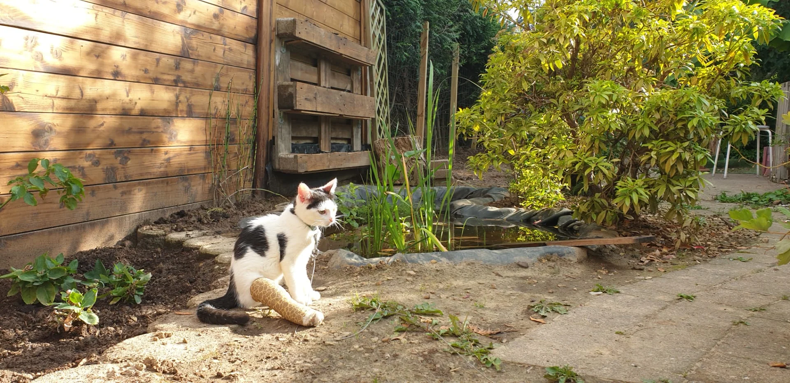
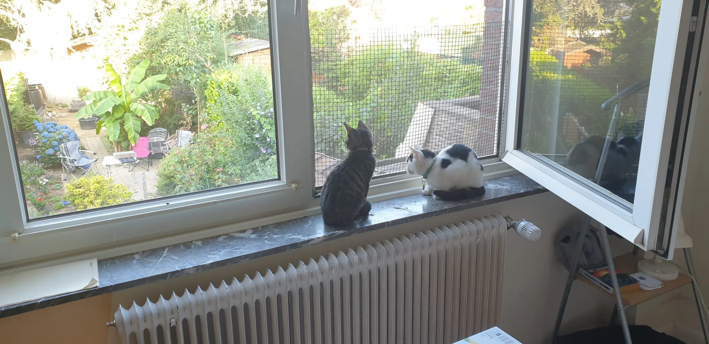

Schieve, le Wonder Cat miraculé
Il y a un an, une belle âme trouvait un jeune chaton mourant devant chez elle et lui sauva la vie en l'amenant chez des merveilleuses vétérinaires.
Quelques jours après, nous recevions un appel qui illuminera nos vies.
L'eau
Son arrivée chez nous s'est faites naturellement, et dès le début il nous a fait fondre avec sa fascination pour l'eau - qu'il a encore et toujours !
Quel bonheur d'avoir rencontré ce chaton si câlin et tellement attachant. Il est vite devenu le roi de la maison.


Son frère
Un mois après son adoption, une drôle de bête le rejoint. Plus vive, plus forte, et plus adroite. Mais aussi un ange qui veille sur son grand frère.
Pas de repos pour les braves
Il a eu droit à quantité de câlins, jouets et séances de "jeux-entraînements" pour récupérer un maximum de souplesse, d'agilité et de tonus musculaire, même si au début ça a été difficile pour lui avec son plâtre — ça nous a valu quelques fous-rires.
Et il a découvert un truc tout nouveau - un beau jardin... Si les débuts de l'exploration de ce nouveau monde étaient faits en laisse, maintenant il peut sortir tout seul. Sous l'oeil vigilant de ses maîtres quand même.

